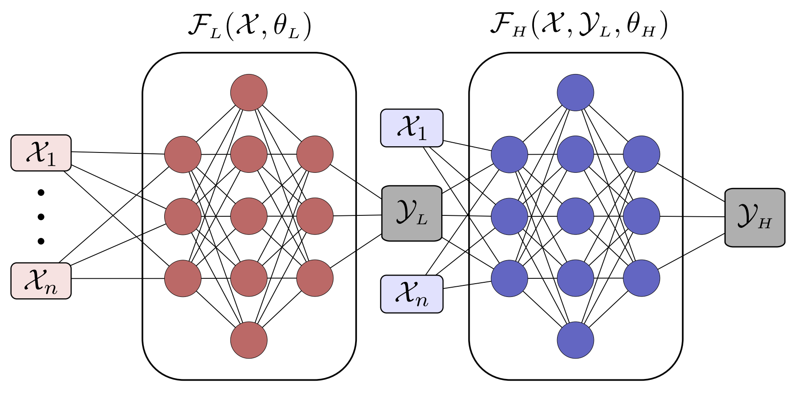
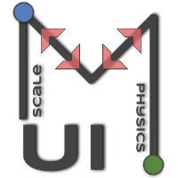

Ongoing projects
Generative methods in Machine Learning for subgrid turbulence closure.
Deep generative methods (e.g. GANs) allow a super-resolution upsampling of coarse CFD to achieve high-fidelity results at lower computational cost. We're developing novel physics-informed generative methods for subgrid turbulence closure.
Key people: Mohammed Sardar (PhD student, 2021-2025)
Multi-fidelity modelling.
Nested multi-fidelity models provide a data-fusion between low and high fidelity data. When exploring parameter space, it is typically impractical to use high-fidelity methods alone (due to their high cost). Multi-fidelity methods use machine learning to learn the mapping between low and high-fidelity methods to provide accurate yet cost-effective surrogate models.
Key people: Andrew Mole (PhD student, 2018-2022, PDRA 2022 - )
Key Outputs: Preprint.

Deep learning in fusion thermal hydraulics.
A significant challenge in nuclear fusion tokamak reactor design is the high heat loading of the plasma-facing components (the blanket and divertor). High energy neutrons bombard these components, creating a non-uniform volumetric heat loading. Circulating lithium-lead eutectic is subject to radiative heating, magnetohydrodynamic (MHD) effects, buoyancy and turbulence. We're incorporating MHD into Xcompact3D for direct numerical simulation (DNS) database generation and subsequent physics-informed data-driven subgrid closure of complex MHD flows.
Key people: Jake Ineson (PhD student 2022-2026)
Code Coupling.
Code coupling allows simple communication between legacy codes to achieve multi-physics or multi-scale capability. We've developed the MUI library to enable effective coupling between codes with minimal effort and maximum performance.
Key collaborators: Brown University, LBNL, UKRI-STFC and IBM Research
Website: MUI
